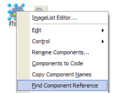

Find Component Reference |
|
The Find Component Reference tool operates in two different modes:
•If a form designer is active and there is a currently selected component, the tool focuses the code editor and then tries to locate the first reference to that component in the source file. For Delphi source files, it will try to locate and select the second occurrence of the component, since the first occurrence of the component name is usually the declaration instead of the first usage of the component. Component references in comments will be found and selected. •If the code editor is active, the tool grabs the identifier under the editor cursor and tries to locate a component on that unit's form named the same as the identifier and selects that component.
Note: Find Component Reference can not locate references to components on other forms/frames or source code references in units other than the current one. 
|